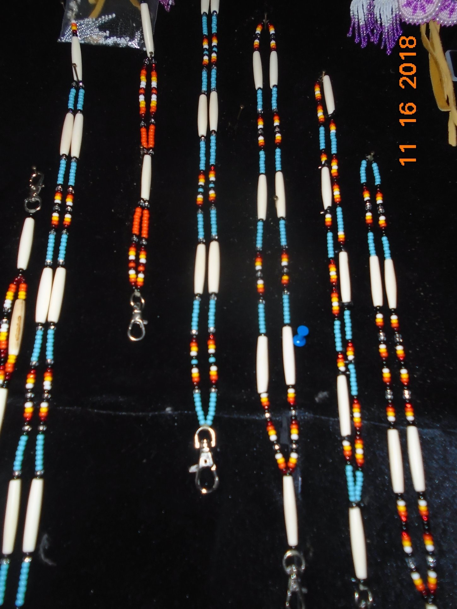
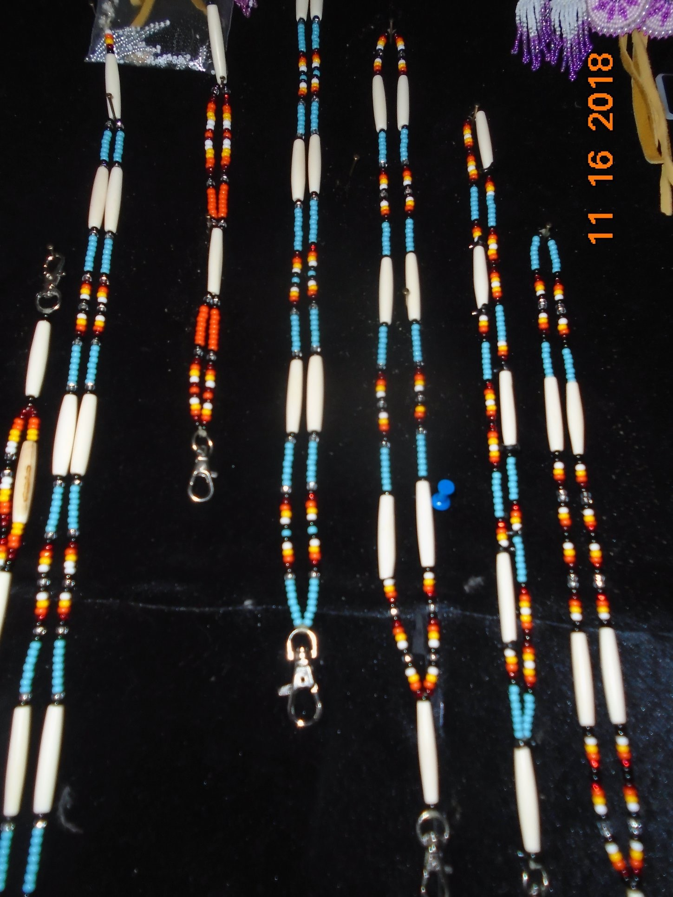

About M&M
Marian and Madeline are sisters that work together with their native crafts. Marian and Madeline both are children of Frank and Sarah Duncan. Along with their siblings, Mystri, RD (+), Lucille, Max (+) and Teddy. Frank Duncan has settled in Binche Keyoh over 60 years ago along with his wife Sarah. Frank comes from Dzitl'ainli and Sarah's linage comes from Daniel Teegee who is a Sekani man and Lucille Teegee comes from Babine.S
One of the many types of native art works including are...
- Hair
- Earings
- Keychains
Indigeous Culture is a way of living.
- Marian and Madeline are avid outdoor people and work and live most of off the land.
- Hunting
- Fishing
- Winter Preparation
- Beading


Marian
Marian is one of four sisters and child of Frank and Sarah Duncan. Marian has three children, Theresa, Lloyd and Johnny and four grandchildren.
Madeline
Madeline is the youngest sister after Mystri, Lucille, Marian and child of Frank and Sarah Duncan. Madeline has four children, Ross, Larry, Carssia, Jody and three grandchildren.
Living and working in Binche
- Stuart Lake
- Hunting
- Beading
- Sewing
- Moose hide
- Fishing
Photo Gallery
 



Video credit-LBadoni via YouTube
More Information about Binche Keyoh Click on Photo
Marian-left and Madeline-right